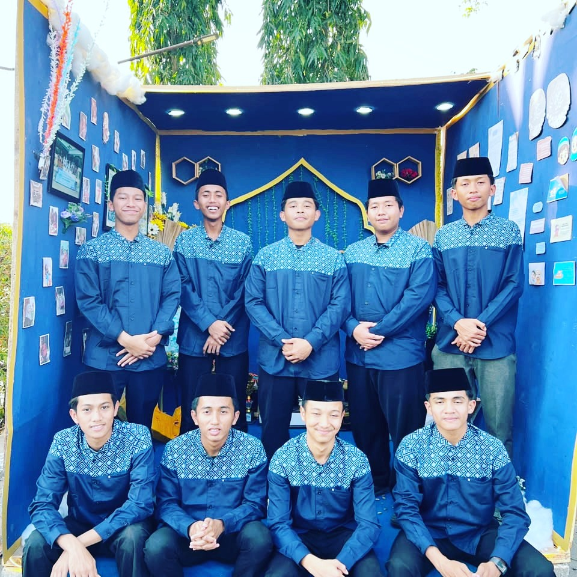
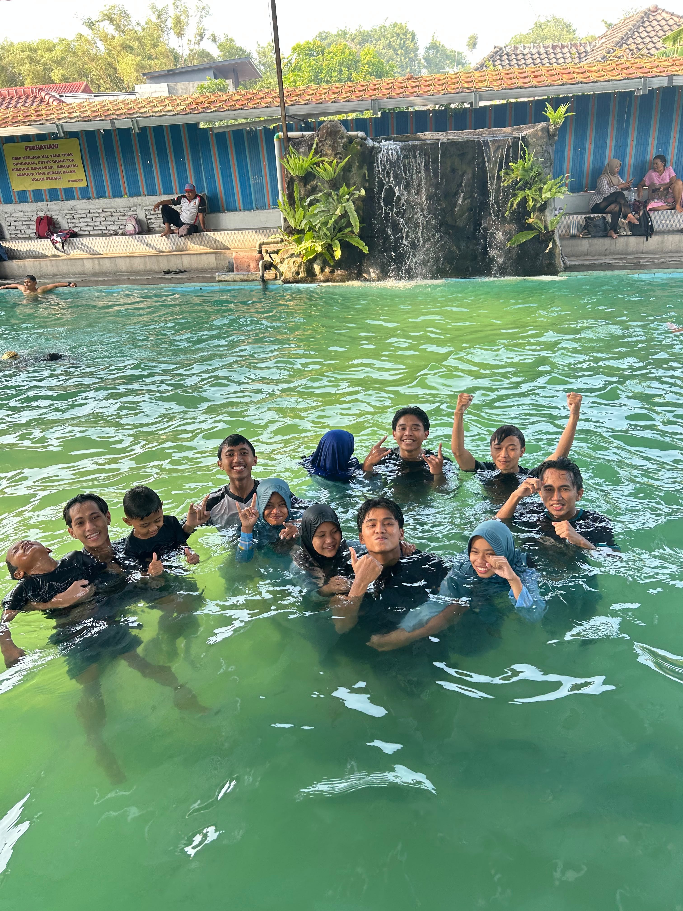
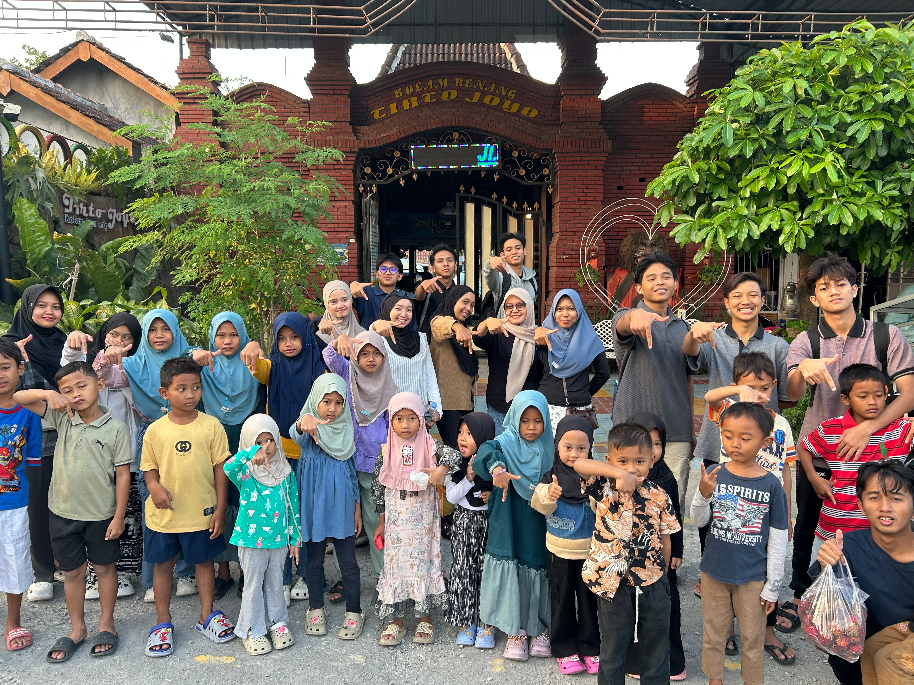
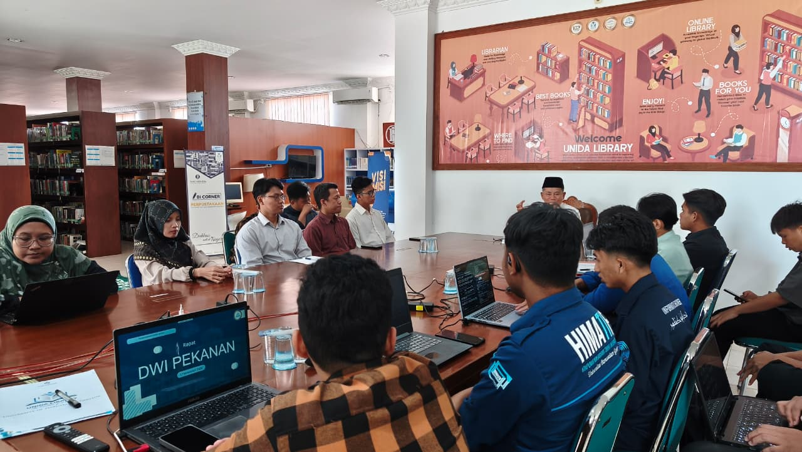

Kegiatan & Pangalaman
Lelakon
Cathetan kegiatan Arya minangka pengajar TPA lan staff IT Perpustakaan UNIDA Gontor.
Kegiatan & Pangalaman
-
2026 – saiki
Pengajar TPA Al-Kholifah
Ngajar lan ndampingi bocah-bocah TPA Al-Kholifah sinambi ngudi pawiyatan luhur Teknik Informatika.
-
Saiki
Staff IT Perpustakaan UNIDA Gontor
Kegiatan lan dokumentasi bebarengan karo tim perpustakaan.
Lelakon TPA


Di sela jadwal kuliah Teknik Informatika, Arya turut mengabdi sebagai pengajar di TPA Al-Kholifah. Ia datang bukan sebagai guru yang serba tahu, melainkan sebagai kawan belajar yang lebih dulu menempuh jalan.
Bersama para ustadz pengajar TPA Al-Kholifah, ia menyiapkan materi sederhana untuk anak-anak: mengenal huruf, membaca, menulis, dan dasar-dasar ilmu agama. Tidak setiap hari berjalan mulus. Ada anak yang cepat menangkap pelajaran, ada pula yang perlu diulang berkali-kali. Di sinilah kesabaran diuji, dan di sinilah para ustadz menunjukkan cara mengajar dengan ikhlas.
Keikhlasan itu terasa dalam hal-hal kecil: datang lebih awal, menyapa anak-anak satu per satu, mengulang penjelasan tanpa mengeluh, dan tetap tersenyum ketika kelas kembali riuh. Para ustadz tidak selalu mendapat sorotan, tetapi kerja mereka menjadi fondasi bagi anak-anak yang sedang tumbuh.
Bagi Arya, TPA Al-Kholifah adalah ruang belajar dua arah. Ia mengajar, tetapi sekaligus belajar sabar, ikhlas, dan konsisten. Pengalaman ini menjadi salah satu bagian paling berharga dalam catatan Lelakon ini — bukti bahwa karya tidak selalu berbentuk kode, tetapi juga waktu yang dibagikan untuk orang lain.
Lelaku Renang ing Tirto Joyo
14 November 2026 · Tirto Joyo




Tanggal 14 November 2026, para ustadz, ustadzah, lan bocah-bocah TPA Al-Kholifah tindak sesarengan menyang blumbang renang Tirto Joyo. Lelaku cilik iki dadi jeda sing nyenengake saka rutinitas sinau: sakeplasan ngaso, dolanan banyu, lan ngrasakake wektu bebarengan.
Tumrap bocah-bocah, blumbang renang dadi papan petualangan. Ana sing langsung mlumpat kanthi bungah, ana uga sing isih ragu lan nyekel tangan ustadz utawa ustadzah. Para pengajar ndampingi siji mbaka siji, njaga supaya kabeh tetep aman, lan sok-sok mulang gerakan dhasar nglangi.
Ing mburine guyu lan cipratan banyu, ana piwulang sing ora tinulis ing papan tulis: wani, percaya, lan kebersamaan. Lelaku iki Arya cathet minangka perangan saka Lelakon TPA Al-Kholifah — dudu mung rekreasi, nanging uga cara liya kanggo ndampingi bocah-bocah tuwuh.
Lelakon Perpustakaan UNIDA Gontor


Arya bertugas sebagai staff IT Perpustakaan UNIDA Gontor.
Peran ini menjadi bagian dari perjalanan Arya di bidang teknologi informasi. Foto ini mendokumentasikan kegiatan bersama tim perpustakaan; catatan kegiatan lainnya dapat ditambahkan di sini seiring perjalanan berlangsung.